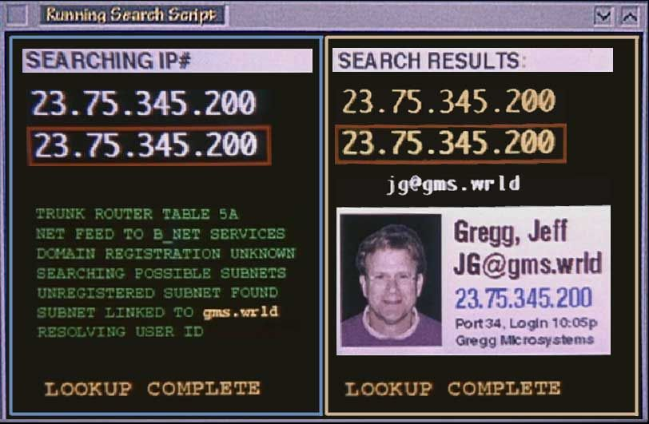
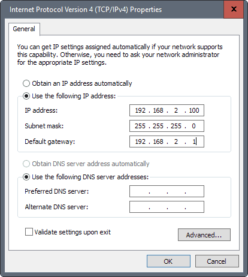

Ako rozdeliť sieť na podsiete? V letný podvečer zoberieme sekerku, sajder do ruky a počneme rozsekávať počítačovú sieť na podsiete.
ISO, osy a sieťový model
Sieťová vrstva (network layer), alias tretia vrstva (L3) v ISO-OSI modeli vymieňa medzi stanicami instadatagramy s údajmi.
Každá stanica v sieti je na tejto vrstve identifikovaná IP adresou, čo je:
- buď štvorica čísiel v rozsahu 0–255, napr.
158.197.31.35 alebo jej analogický binárny prepis:
10011110 11000101 00011111 00100011
Alebo ak ste Sandra Bullock v archívnom filme The Network, máte aj vyššie IP adresy.

IPv4
Toto platí v najčastejšie používanom protokole, IPv4 (štyri bloky!). Je starý, je overený, má očividný limit: maximálny teoretický počet IP adries. Momentálne (už X rokov) sa nasadzuje protokol IPv6, ale tomu sa venovať nebudeme.
Stanice v sieti
Stanice sa združujú do stádasiete, na čele s bačom routerom. Každá stanica môže mať viacero sieťových rozhraní (network interface), kde obvykle platí:
- 1 sieťové rozhranie = 1 sieťová karta = 1 IP adresa
Bežný počítač môže mať 1 kartu pre ethernet (= kábel), 1 kartu pre WiFi a teda môže byť pripojený do sietí 2 IP adresami.
CIDR
CIDR nie je alkohol, ale Classless Inter-Domain Routing, štýlový spôsob adresácie staníc.
Každá IP adresa pozostáva z dvoch častí:
- sieťovú časť: identifikuje konkrétnu sieť
- stanicovú časť: identifikuje konkrétne stanice.
Bežná metafora sú ulice a popisné čísla. Ulica je „sieťová časť“, popisné číslo identifikuje konkrétny „dom“.
Vďaka maske vieme oddeliť sieťovú časť od stanicovej. Maska je 32bitový štrúdlik jednotkových bajtov nasledovaný štrúdlikom nulových bajtov.
Každá stanica v CIDR notifikácii uvedie svoju IP adresu a dĺžku masky. Napríklad:
192.168.1.16/24Táto adresa hovorí, že maska má 24 jednotkových bitov. Binárny prepis:
192 168 1 16
11000000 10101000 00000001 00010000 adresa
11111111 11111111 11111111 00000000 maska Maska sa dá prepísať ekvivalentne do štvorblokového formátu:
255.255.255.0Oba zápisy: cez IP adresu a dĺžku i cez IP adresu a masku sú ekvivalentné.
Napríklad vo Windowse možno napiecť IP adresu sieťovej karty pomocou masky:

Sú stanice v rovnakej sieti? Adresa siete
Vďaka maske vieme ľahko zistiť, či sú dve stanice v rovnakej sieti, teda za spoločným routerom.
Majme dve stanice:
158.197.31.170/27a158.197.31.155/27
Pre každú stanicu zistíme adresu siete, a ak sa zhodujú, sú v rovnakej sieti. Tú zistíme logickým AND-om bitov IP adresy a masky siete.
158.197. 31.170 | 10011110 11000101 00011111 10101010
255.255.255.224 | 11111111 11111111 11111111 11100000
-----------------------------------------------------
AND | 10011110 11000101 00011111 10100000a
158.197. 31.155 | 10011110 11000101 00011111 10011011
255.255.255.224 | 11111111 11111111 11111111 11100000
-----------------------------------------------------
AND | 10011110 11000101 00011111 10000000Získame dve adresy siete, ktoré sú odlišné:
- 158.197.31.160
- 158.197.31.128
A teda stanice nie sú v rovnakej sieti.
Treba trúbiť každej stanici? Broadcastová adresa
V každej sieti existuje broadcastová adresa určená pre datagramy, ktoré majú byť prijaté všetkými sieťovými rozhraniami. Ak chceme trúbiť info každému, datagramy posielame na broadcastovú adresu.
Získame ju logickým OR medzi IP adresou a invertovanou maskou siete.
Zoberme si 158.197.31.170/27
158.197. 31.170 | 10011110 11000101 00011111 10101010
invertovaná 255.255.255.224 | 00000000 00000000 00000000 00011111
-----------------------------------------------------------------
OR | 10011110 11000101 00011111 10111111 | 158.197.31.191Broadcastová adresa tejto siete je 158.197.31.191.
Rozsahy a kapacity siete
Sieťová adresa a broadcastová adresa tvoria dolné a horné ohraničenia pre rozsahy IP adries staníc v sieti.
Pre 158.197.31.170/27 máme:
- adresa siete:
158.197.31.160 - broadcastová adresa:
158.197.31.191.
IP adresy v tomto rozsahu (od .161 po .191) môžu byť pridelené staniciam.
Počet staníc podľa masky
Z masky vieme tiež určiť maximálny počet staníc v sieti. Napríklad naša 27bitová maska zároveň určuje 32 - 27 = 5 bitov pre stanicové adresy. To nám dáva 2^5 = 32 staníc v danej sieti. Od tejto kapacity odčítame 2 adresy: sieťovú IP adresu a broadcastovú IP adresu, čím získame 30 staníc.
Príklad / cvičenie na rozsahy siete
Majme sieť 101.101.101.64/26. Aký je rozsah IP adries?
Riešenie
IP 101.101.101. 64 | 01100101 01100101 01100101 01000000
Maska: | 11111111 11111111 11111111 11000000 | 255.255.255.192
Adresa siete (AND) | 01100101 01100101 01100101 01000000 | 101.101.101.64
Invertovaná maska | 00000000 00000000 00000000 00111111
Broadcast (OR s inv.) | 01100101 01100101 01100101 01111111 | 101.101.101.127Rozsah IP adries je 101.101.101.65 — 101.101.101.126.
Riešenie 2
Maska s 26 bitmi ponecháva 32 - 26 = 6 bitov pre stanicové IP adresy. Dva na šiestu, t. j. 2^6 = 64, čo znamená, že v sieti môže byť maximálne 64 mínus adresa siete mínus broadcast = 62 staníc.
- Dolný rozsah je
101.101.101.64 + 1=101.101.101.65 - Horný rozsah je
101.101.101.64 + 62=101.101.101.126
Rozbíjanie siete na podsiete
Administrátorovi siete sa neraz stáva, že je mu pridelený konkrétny rozsah IP adries a je na ňom, ako sa s ním vysporiada. (To sa deje hierarchicky, cárom IP adries je organizácia IANA, a pod ňou, pre Európu je organizácia RIPE NCC.)
Obvykle zoberie sekeru, či iný nástroj a počne sekať bity.
Rozbíjanie siete na 2 podsiete
Tvárme sa, že nám zhora spadla sieť 158.197.28.0/22. Čo z toho zistíme?
- 22 bitov je sieťová časť
- 10 bitov je stanicová časť = 2^10 = 1024 staníc mínus sieť mínus broadcast = 1022 staníc.
Maska vyzerá nasledovne:
255.255.252. 0 | 11111111 11111111 11111100 00000000Ak chceme pridať dve podsiete, potrebujeme predĺžiť masku. Ak ju natiahneme o 1 bit, vieme odlíšiť dve podsiete (0 a 1).
Inými slovami: dva na koľkú dá dve podsiete? Dva na prvú.
- Teda masku natiahneme o 1 bit na 23 bitov.
- A ostane nám 9 bitov pre stanicové rozsahy, teda 512 – sieť – broadcast = 510 staníc v každej podsieti.
Riešenie 1: kupecké počty
Poďme prideľovať od posledného (štvrtého oktetu). 512 staníc sa sa nezmestí do jedného oktetu, ale do dvoch. Vyplňme teda prvú podsieť, pričom ignorujeme adresu siete a broadcast.
158.197.28.1—158.197.28.254
Ostalo nám ešte 254 staníc, ktoré dáme do tretieho oktetu .29.XXX.
158.197.29.1—158.197.29.254
Druhá podsieť funguje podobne. Má 512 staníc, ktoré rozsekneme do do oktetov .30 a .31.
158.197.30.1—158.197.30.254158.197.31.1—158.197.31.254
Riešenie 2: exaktnejšie
Keďže sme masku rozšírili o 1 bit, budeme vyrábať všetky kombinácie núl a jednotiek v rozšírenej sekcii masky.
Prvá podsieť
Začneme s nulou na 23. pozícii a zistíme adresu siete.
158.197. 28. 0 | 10011110 11000101 000111|0|0 00000000
255.255.254. 0 | 11111111 11111111 111111|1|0 00000000
-------------------------------------------------------
AND | 10011110 11000101 000111|0|0 00000000 | 158.197.28.0Zároveň zistíme broadcastovú adresu, čo bude horný rozsah pre prvú podsieť. Určíme to OR-ovaním s invertovanou maskou.
158.197. 28. 0 | 10011110 11000101 000111|0|0 00000000
! 255.255.254. 0 | 00000000 00000000 000000|0|1 11111111
---------------------------------------------------------
OR | 10011110 11000101 000111|0|1 11111111 | 158.197.29.255Pre prvú podsieť teda máme rozsah 158.197.28.1—158.197.29.254.
Druhá podsieť
Začneme s jednotkou na 23. pozícii a zistíme adresu siete a broadcast.
158.197. 30. 0 | 10011110 11000101 000111|1|0 00000000
255.255.254. 0 | 11111111 11111111 111111|1|0 00000000
-------------------------------------------------------
AND | 10011110 11000101 000111|1|0 00000000 | 158.197.30.0Broadcast:
158.197. 28. 0 | 10011110 11000101 000111|1|0 00000000
! 255.255.254. 0 | 00000000 00000000 000000|0|1 11111111
-------------------------------------------------------
OR | 10011110 11000101 000111|1|1 11111111 | 158.197.31.255Pre druhú podsieť teda máme rozsah 158.197.30.1—158.197.31.254.
Rozbíjanie siete na 4 podsiete
Majme opäť sieť 158.197.28.0/22, ktorú chceme rozbiť na 4 podsiete.
Dva na koľkú dá štyri podsiete? Dva na druhú.
- Teda masku natiahneme o 2 bity na 24 bitov.
- A ostane nám 8 bitov pre stanicové rozsahy, teda 256 - sieť - broadcast = 254 staníc v každej podsieti.
Riešenie: kupecké počty
Teraz je to jednoduché: 254 staníc sa vždy zmestí do jedného oktetu. Stačí teda každú podsieť hodiť pod postupne zvyšovanú adresu v treťom oktete, postupne .28, .29, .30 a .31.
158.197.28.0/24,158.197.29.0/24,158.197.30.0/24a158.197.31.0/24.
Riešenie: poctivé počty
Rozšírme masku na 24 bitov:
158.197. 28. 0 | 10011110 11000101 000111|00| 00000000
11111111 11111111 111111|11| 00000000 | 255.255.255.0Sieťové adresy budú získavané všetkými kombináciami 7. a 8. bitu v treťom oktete, pretože o ten sme natiahli masku:
- prvá podsieť: 00011100 =
___.___.28.000 - druhá podsieť: 00011101 =
___.___.29.000 - tretia podsieť: 00011110 =
___.___.30.000 - štvrtá podsieť: 00011111 =
___.___.31.000
Rozbíjanie inej siete na 4 podsiete
Zoberme si inú sieť 101.101.101.64/26 a rozbime ju na 4 podsiete s rovnakým počtom adries.
Riešenie: kupecké počty
Na 4 siete potrebujeme rozšíriť masku tak, aby obsiahla dodatočné 4 siete. Dva na koľkú je 4? Na druhú, teda masku rozšírime o 2 bity.
To nám dáva 32 - 28 = 4 bity pre stanicové IP adresy, čiže 2^4 mínus adresa siete mínus broadcast = 14 staníc na každú podsieť.
Z toho vieme napočítať rozsahy:
- od
101.101.101.(64 + 1)do101.101.101.(64+14):101.101.101.65—101.101.101.78 .79je pre broadcast,.80pre adresu druhej podsiete- od
101.101.101.(80 + 1)do101.101.101.(80 + 14):101.101.101.81—101.101.101.94 .95je pre broadcast druhej podsiete,.96pre adresu tretej podsiete- od
101.101.101.(96 + 1)do101.101.101.(96 + 14):101.101.101.97—101.101.101.110 .111je pre broadcast tretej podsiete,.112pre adresu štvrtej podsiete- od
101.101.101.(112 + 1)do101.101.101.(112 + 14):101.101.101.113—101.101.101.126
Riešenie: presné počty
Natiahnime masku z 26 bitov na 28 bitov (dva dodatočné bity obsiahnu 2^2 = 4 podsiete).
| |!!|
Maska: | 11111111 11111111 11111111 11|11|0000 | 255.255.255.240Teraz vyrábajme všetky kombinácie núl a jednotiek na pozíciách v adrese siete, o ktoré sme natiahli masku.
Prvá podsieť (bity 00)
..
101.101.101.64 | 01100101 01100101 01100101 01|00|0000
Maska: | 11111111 11111111 11111111 11|11|0000 | 255.255.255.192
Adresa siete: | 01100101 01100101 01100101 01|00|0000 | 101.101.101. 64Druhá podsieť (bity 01)
..
101.101.101.64 | 01100101 01100101 01100101 01|01|0000
Maska: | 11111111 11111111 11111111 11|11|0000 | 255.255.255.192
Adresa siete: | 01100101 01100101 01100101 01|01|0000 | 101.101.101. 80Tretia podsieť (bity 10)
..
101.101.101.64 | 01100101 01100101 01100101 01|10|0000
Maska: | 11111111 11111111 11111111 11|11|0000 | 255.255.255.192
Adresa siete: | 01100101 01100101 01100101 01|10|0000 | 101.101.101. 96Štvrtá podsieť (bity 11)
..
101.101.101.64 | 01100101 01100101 01100101 01|11|0000
Maska: | 11111111 11111111 11111111 11|11|0000 | 255.255.255.192
Adresa siete: | 01100101 01100101 01100101 01|11|0000 | 101.101.101.112Sumárne
- maska podsietí bude
255.255.255.240 - rozsahy adries (s vynechaním IP adries siete a broadcastových adries)
101.101.101.65–101.101.101.78101.101.101.81–101.101.101.94101.101.101.97–101.101.101.110101.101.101.113–101.101.101.126
Rozbíjanie siete na 3 podsiete
Majme opäť sieť 158.197.28.0/22. Teraz sú však požiadavky netradičné:
- finančné oddelenie má byť v jednej podsieti
- verejné servery v druhej podsieti
- zvyšok firmy v tretej podsieti.
Možnosti:
- Buď rozdelíme na 4 podsiete (a jedna bude ležať ladom).
- Alebo rozdelíme na 2 podsiete a jednu z nich rozdelíme na 2 podpodsiete. Dohromady máme 1022 staníc, ktoré rozdelíme:
- Finančníci a verejné servery: 512 - 2 stanice = 510 staníc
- Finančníci: 256 - 2 stanice = 254 staníc
- Verejné servery: 256 - 2 stanice = 254 staníc.
- Zvyšok firmy: 512 - 2 stanice = 510 staníc
Riešenie
Rozšírime masku o 2 bity (aby sme pojali 4 podsiete) na 158.197.28.0/24:
-------------------------------------------!!-------------------------
158.197. 28. 0 | 10011110 11000101 000111|00| 00000000
11111111 11111111 111111|11| 00000000 | 255.255.255.0
-----------------------------------------------------------------------
10011110 11000101 000111|00| 00000000 | 158.197.28.0A 2. podsieť:
-------------------------------------------!!-------------------------
158.197. 28. 0 | 10011110 11000101 000111|01| 00000000
11111111 11111111 111111|11| 00000000 | 255.255.255.0
-----------------------------------------------------------------------
10011110 11000101 000111|01| 00000000 | 158.197.29.0A tretia podsieť:
-------------------------------------------!!-------------------------
158.197. 28. 0 | 10011110 11000101 000111|10| 00000000
11111111 11111111 111111|11| 00000000 | 255.255.255.0
-----------------------------------------------------------------------
10011110 11000101 000111|10| 00000000 | 158.197.30.0A štvrtá podsieť:
-------------------------------------------!!-------------------------
158.197. 28. 0 | 10011110 11000101 000111|11| 00000000
11111111 11111111 111111|11| 00000000 | 255.255.255.0
-----------------------------------------------------------------------
10011110 11000101 000111|11| 00000000 | 158.197.31.0Získame tak 4 podsiete:
- 158.197.28.0/24 pre finančákov
- 158.197.29.0/24 pre verejné siete
- 158.197.30.0/24
- 158.197.31.0/24
Posledné dve však vieme zlúčiť do podsiete pre zvyšok firmy a dať im masku o jedna menšiu:
-------------------------------------------!--------------------------
158.197. 28. 0 | 10011110 11000101 000111|1|0 00000000
11111111 11111111 111111|1|0 00000000 | 255.255.254.0
-----------------------------------------------------------------------
10011110 11000101 000111|1|0 00000000 | 158.197.30.0Horná hranica pre zlúčenú sieť:
-------------------------------------------!--------------------------
158.197. 28. 0 | 10011110 11000101 000111|1|0 00000000
00000000 00000000 000000|0|1 11111111 | !255.255.254.0
------------------------------------------------------------------------
10011110 11000101 000111|1|1 11111111 | 158.197.31. 255Špeciálne IP adresy
V IPv4 rozoznávame aj špeciálne typy adries.
0.0.0.0/32zdrojová adresa stanice v lokálnej sieti pri žiadosti DHCP o pridelenie IP.255.255.255.255: broadcast pre lokálnu sieť: cieľová adresa pre všetky rozhrania v lokálnej sieti.127.0.0.1loopback. Datagram s cieľovou adresou z tohto rozsahu neopúšťajú počítač.- Privátne siete pre NAT routre alebo VPN:
10.0.0.0/8172.16.0.0/12192.168.0.0/16
Nástroje
Na overenie delenia existuje množstvo nástrojov:
- Visual Subnet Calculator s podporou delenia sietí
- IP Calculator: počítadlo rozsahov siete na základe masky